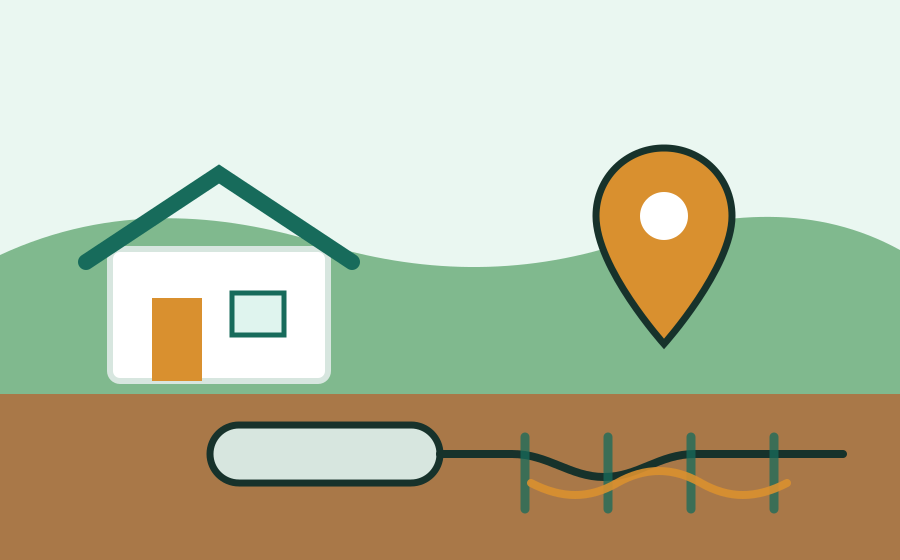

Perris septic service requests
Septic Tank Pumping & Service Requests in Perris, CA
Septic backup, odors, slow drains, or tank pumping needed? Call or submit a request for septic service help in Perris and nearby areas.
Prefer to call? (951) 625-1510
Services
Septic help for Perris-area properties
Choose the issue that best matches what is happening at the property.
Local septic help
Pumping, backup, odor, and inspection requests
Septic problems can affect drains, bathrooms, yards, and daily use of a home or property. Call or submit the online form with the location, symptoms, last pumping date if known, access notes, and preferred timing.
Requests may include septic tank pumping, cleaning, backups, odors, slow drains, inspections, and drain field or leach field concerns.
Nearby areas
Perris and nearby Riverside County communities
Requests are accepted for Perris and nearby communities. Availability can vary by exact address, property access, tank location, and requested service.
Property service details
Helpful information to include
Mention whether you need pumping, cleaning, backup help, odor help, an inspection, or drain field service. Include slow drains, gurgling, sewage smells, standing water, soggy soil, gate codes, pets, access limitations, and whether tank lids are visible.

How It Works
A simple septic service request process
Request septic help
Tell us what septic issue you’re dealing with.
Call or use the form for pumping, cleaning, backup, odor, inspection, slow drain, drain field, or leach field service requests.
Prefer to call? (951) 625-1510
FAQ